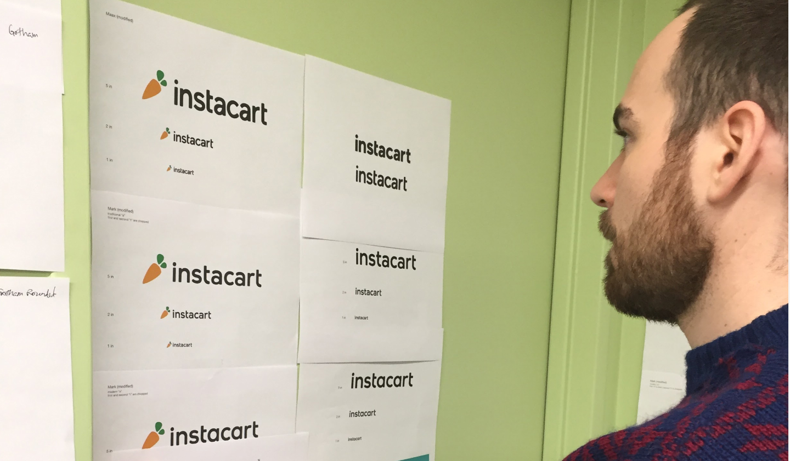

Instacart Logo
Designing the iconic carrot for the next era of grocery delivery
I was sitting at my desk late one evening in 2015. I wasn’t super happy with the current state of the Instacart branding. I sketched out a concept of how we might simplify the logo, showed it to my desk-mate, and then we both smiled. But it was late, and I was going to meet some friends for dinner. I closed my laptop and didn’t show anyone else again until 6 months later.
The goal
As we were approaching the end of 2015, the Instacart business was beginning to take off. This made Instcart a bigger risk for trademark infringement and led us to form a group to redesign our company logo.
Figuring out criteria
- Embrace Constraints. Thanks to our original logotype’s similarity to another brand, we wanted to move away from script. And thanks to a trademark troll, we knew any new logo needed to stand out somewhat from a standard sans-serif. So it left us with set constraints to work within.
- Bolder and more legible. Something that often came up in research with prospective customers was poor readability with our current script logo. This learning got louder as we put physical signage in stores for the first time.
- Keep the carrot. Once you create something, it can easily become ingrained in the company’s culture and vernacular. From our ERGs (Rainbow carrots) to the fact that there have been employees who’ve dressed up as carrots over the years (Hey, Shadi), the carrot was unique and beloved.
- Clear usage. The current logo had a wordmark and logo that were not used together. Instead, each time we wanted to show a logo we had to make a gut decision which might be different depending on which designer or department was working on it.
Setting the mood
Starting with moodboards, we made sure the entire design team was able to find imagery they wanted to emulate some aspect of and we posted them up on the walls. We wanted to look at different styles and moods in order to build brand attributes from them. We began by categorizing the images into buckets, looking for 4-7 large groupings. From these we created our attributes:
Dependable Thoughtful Vibrant Clear Down-to-earth Smart
We were shooting to represent these in a new mark. We discussed where our current logo missed the bar and where we could improve it.
Finding a mark
We knew we wanted to keep the carrot, but even within this one simple vegetable, an entire world of possibility existed. So we had folks, especially those on the team with a talent for drawing, begin to experiment with a carrot that could embody our attributes well.
There were very creative thoughts that came from this: carrot hearts, carrot presents, even carrot crowns. But a lot of them skewed towards thoughtful or dependable but really missed the bar when it came to clarity. After all, it’s a carrot. What’s more clear than making sure folks understand that? We took a few of our favorites into Illustrator and began to see what they’d look like with more time and effort put into each concept. Then we began to debate the merits of each concept, show them off to internal stakeholders, and even show them to users (anonymously) to see which concept might stick.
One of the options I’d put into the running was that same drawing I did 6 months ago before this process began. When it came down to it, the mark hit the attributes we were looking for better than others did. It was a modern carrot: something dependable, clear, and smart. It was also a canvas for us to paint a brand upon. Results came back positive too and we narrowed in on it as the frontrunner. I began to clean it up and get it ready for primetime alongside the next step: exploring type.
What’s in a Wordmark?
Lettering was another ballgame. Thanks to our strict legal guidelines for the new logo, we either had to make the logo a slab serif or we had to get creative. The team quickly began to pair typefaces roughly with the logomark and even others from the last round of voting. We were all trying to see what would stick.
Eventually we all agreed we wanted something modern, which meant we wanted to pursue a san-serif even with the possibility of Legal rejecting it. A few of the favorite takes were cleaned up and eventually the team met to discuss and decide.
Get the swatches
If you’ve ever worked with me, you know I go on and on about how difficult it is to nail green for a brand. When we had shown users our old logo—it was often in a very dark, yet legible, green. The unfortunate thing was, Instacart sold vegetables. And people wanted fresh vegetables but all they saw in dark green was something rotting in the fridge. Yet accessibility and clarity was something we deeply wanted. So balancing those two was quite a task.
We found a few pantone colors that could work and paired them over and over in a matrix of endless combinations. We showed these to users and employees, seeing which met our two attributes: clear and vibrant.
Testing
With clarity being such an important goal, we decided we needed to test our logo with people, not on brand attributes alone, but instead focusing on how easy it was to read.
Instacart leadership was looking to make sure our claims were backed up with data. We took the logo permutations we were considering and scaled them to different sizes and blurred the logo at different levels. With those in hand, we ran them through Mechanical Turk, having users read and rate the new logos so we could turn something that is often an opinion-based decision into something we could back up with data.
A Holiday Surprise
With a finalized logo decided on, the design team was happy with the coordinated effort and outcome. We celebrated with a few drinks in the room we’d used for the past few months. We sat among the entire process of work we’d gone through hanging up on the walls around us and toasted before heading off into the holiday season. But that’s when we got an email from our legal team.
Over the holiday break, we had trademark lawyers make sure our new mark stood up against other companies that might try and take legal action against us. The lawyers weren’t too thrilled with the similarities on a few of our letters and tried to make the case they looked a little too much like that trademark troll I mentioned earlier (a logo written in plain arial).
It was a frustrating moment trying to explain to a trademark lawyer that there are only so many ways to make an ‘a’ before it lost meaning. But they had a point—our mark had to stand up in a court. Panels of people would be brought in and asked if these two things were alike, and from that standpoint, we needed just a bit more differentiation.
Another designer, Damon Chin, and I hopped on the task remotely (something we didn’t do so much of back then). We came up with a few concepts and looked at some of the more wild ideas we’d had along the journey. There were a million things we could do to vary the logo further, but so many of them had poor legibility tradeoffs. One in particular stood out: we opted to remove a few ascenders from the logotype. This differentiated the wordmark a little more yet didn’t compromise some of our favorite typographic flourishes of the first attempt. We spent the next few days sending illustrator files back and forth until we finally agreed that it was in a great place. We nervously resubmitted them to the legal team.
The response came back later that day and I opened the email as soon I heard the familiar notification ping. It was approved. They were thankful we went the extra mile to de-risk the company, while we were happy they compromised and didn’t make us create something indecipherable. In the end, we had a fantastic new wordmark that was more iconic and unique in hindsight.
Rolling it Out
We came back from the holidays with vigor—showing off the new logo to the team with a huge presentation complete with carrot cake. We’d introduce it to the world shortly after. To do that, we had to replace every aspect of the old logo across the web and print. This was no easy feat, especially because our previous logo and logotype were used separately in almost every instance. Each implementation was a bit different than what was already there. We wanted it all to swap over in one swoop the day of the announcement which was a truly exciting statement in my mind: this is the new Instacart. We were able to do it without many hiccups and the rest is history.
The new logo was released on January 13, 2016.
In the wild
The fruits of this project are ones I still get to enjoy. I’ve been lucky enough to see my carrot in so many instances, formats, and art styles. And they only keep coming. I am thankful to Instacart for giving me and the team the opportunity to change the face of Instacart and help it become the essential service it is today. Here are a few of my favorites: